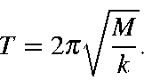
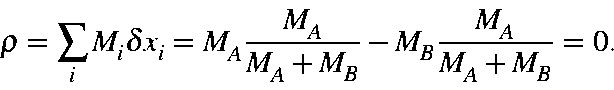
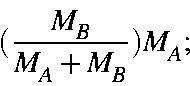
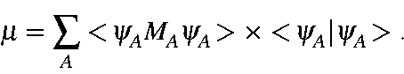

Next: Effective masses
Up: Normal Coordinate Calculation
Previous: Vibrational AnalysisReduced masses
A molecular vibration normally involves all the atoms moving simultaneously.
This is clearly very different from the simple harmonic motion of a mass
attached to a spring that is attached to an immovable object. Nevertheless, it
is convenient to visualize a molecular vibration as consisting of a single
mass, M, on the end of a spring of force constant k. For such a system,
the period of vibration, T, is given by:

How, then, do we relate the complicated motion of a molecular vibration to the
mass and spring model?
During a molecular vibration, each atom follows a simple harmonic motion. So
the problem is, to what extent does each atom contribute to the mass, and to
what extent does each atom contribute to the spring?
In order to answer this, first consider some simple systems. In the system
H-X, where X has a very large mass, compared to that of the H, the effective
mass is obviously that of H. In H2, the effective mass is half that of a
single H. Why is this so? In H-X, particle X is stationary, and particle H
contributes 100% of the energy to the vibration. In H2, each particle
obviously contributes 50%, but now the center of mass is half way between the
two particles. If the force constants are the same in H-X and in H-H, then
the period of vibration of H-X will be 21/2
times that of H-H. This is
the same period as for a system of two particles, each of which having a mass
twice that of a H particle. For a system of two particles, A and B, having
masses MA and MB, the vibrational wavefunction,  ,
is:
,
is:
This can be interpreted as particle A moves
 in the time particle B moves
in the time particle B moves
 .
The center of
mass, ,
stays constant:
.
The center of
mass, ,
stays constant:

The square of the coefficients of the wavefunction represent the contribution
to the motion. The effective mass, ,
for this system is:
What fraction is due to A and what fraction is due to B? From the
wavefunction, the intensity of A is
 ,
and the relative
rate of motion is also
,
and the relative
rate of motion is also
 ,
so the contribution to the
effective mass due to A is:
,
so the contribution to the
effective mass due to A is:

likewise, for B:
Consider two particles, A and B, of mass 1 and 4, respectively. The
wavefunction for the vibration is:
where A contributes
and B contributes
to the effective mass of
 .
.
In other words, the contribution to the effective mass is equal to the
intensity of the wavefunction on each atom, times the mass of the atom, times
the intensity of the wavefunction. This is intuitively correct: the total
vibration is composed of contributions from each particle, and the amount each
particle contributes is proportional to its intensity in the wavefunction. The
mass of each particle is also proportional to its intensity in the
wavefunction.
Extension to polyatomic molecules is now trivial. The effective mass is given
by:
\times <\!\psi_A\vert\psi_A\!>.
\end{displaymath}">
When written in this way, the quantum nature of the expression is obvious.
However, for computational convenience, the effective mass is rewritten as:
or
This expression is suitable for most systems. However, it is not a
well-defined quantity. Under certain circumstances involving degenerate
vibrations, the quantity m
can become ill-defined. This phenomenon can be
attributed to the fact that the reduced mass is not an observable.
Next: Effective masses
Up: Normal Coordinate Calculation
Previous: Vibrational Analysis
J. J. P. Stewart
Fujitsu Ltd. 2001